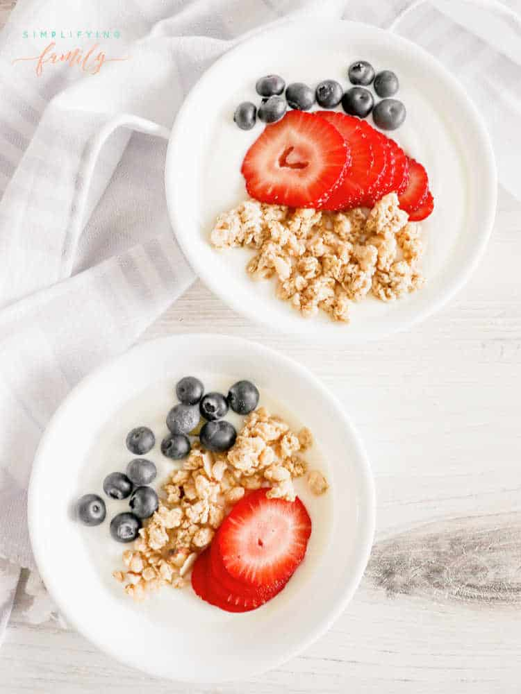

Yogurt and cereal

Description
A quick and nutrient dense meal that can be ready in 2 minutes!
Ingredients
- Your protein and fiber cereal mix
- High protein greek yogurt. I opt for the whole milk fat version for the extra nutrients
- Any kind of fruit you want to add
Steps
- Combine your cereal and fruit into your yogurt
- Enjoy!